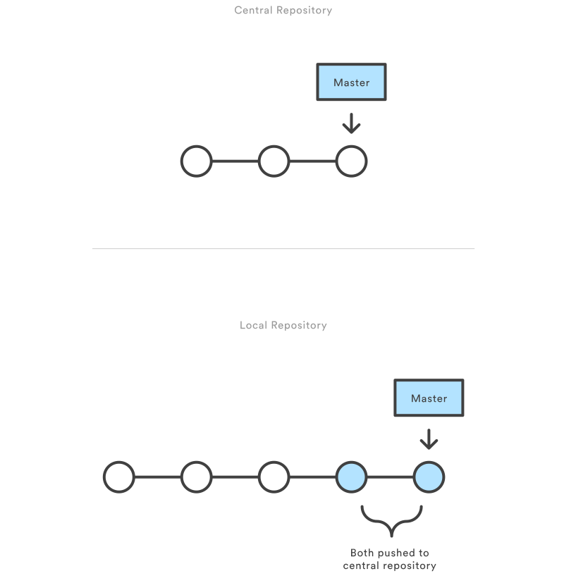

Agenda
- Entstehung von Git
- Arbeitsweise mit Git
- Zentralisierter Workflow
- Branch basierter Workflow
- Gitflow Workflow
- Forking Workflow
Entstehung von Git

Ziele
- Geschwindigkeit
- Einfaches Design
- Gute Unterstützung von nicht-linearer Entwicklung
- Vollständig verteilt
git init
git add
git commit
git status
Speicherdienste
- GitHub
- Bitbucket (GitLab)
- Assembla (GitLab)
git clone
git push
git fetch
git pull
Zentralisierter Workflow

Zentralisierter Workflow

Branch basierter Workflow

git branch
git checkout
git remote prune
Gitflow Workflow